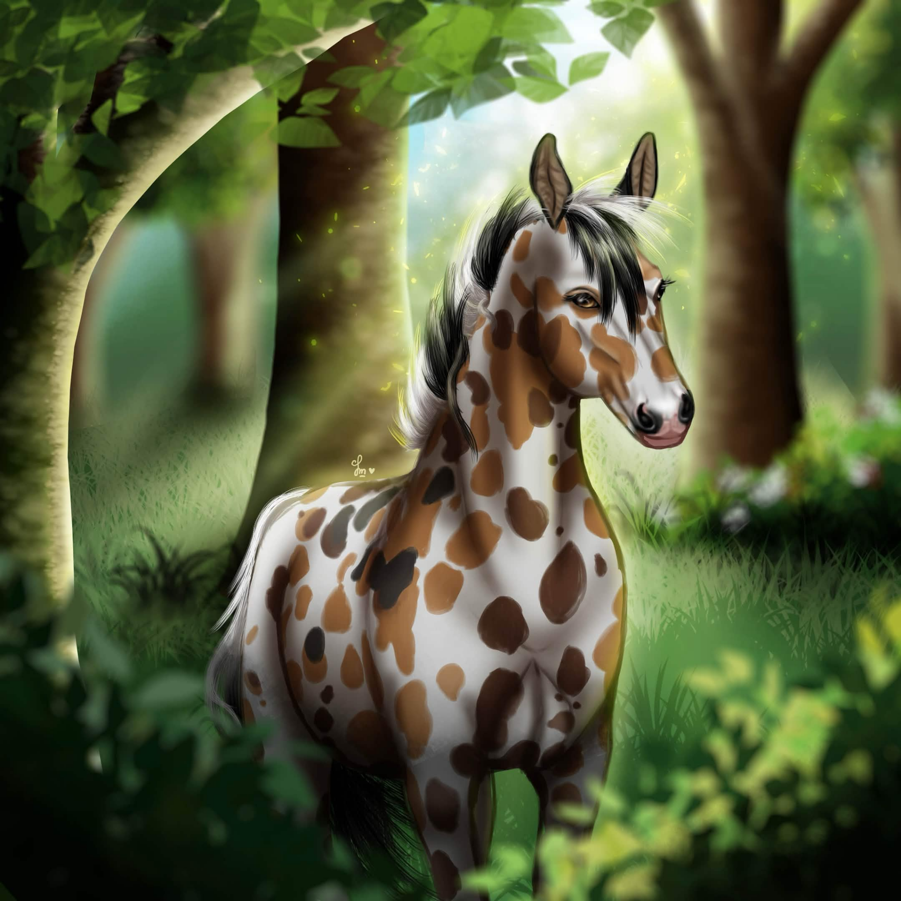
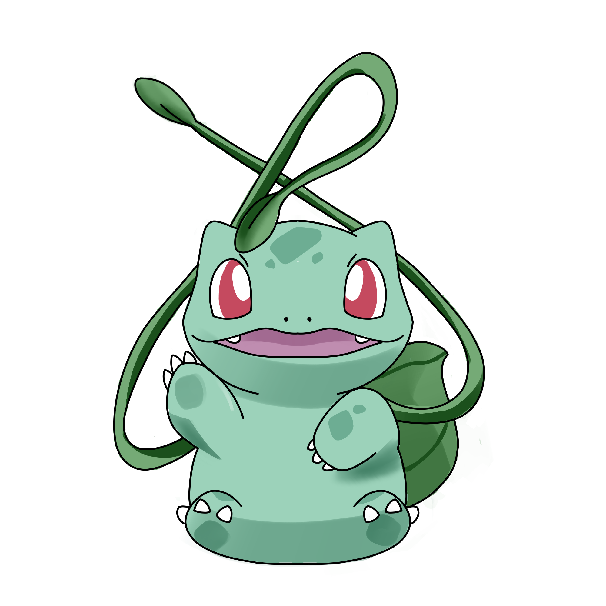

STAR STABLE ONLINE · POKÉMON CLUB × TEAM
✦ DEIN NÄCHSTES ABENTEUER BEGINNT HIER
Willkommen,
Trainer!
Hey Trainer! <3 Wir sind die Dizzy Hunters – ein kleiner, liebevoller Freizeitclub, inspiriert von der Welt der Pokémon. Bei uns zählen Freundschaft, Spaß und gemeinsame Abenteuer. Ganz ohne Dressurzwang.
🌿 Freizeit statt Pflicht🎮 Gemeinsam spielen💚 Neue Freunde



✦ DIZZY HUNTERS ✦
01 /Ein Club, viele AbenteuerGemeinsam in Star Stable Online und darüber hinaus
02 /Alles freiwilligKein Anwesenheitsdruck, kein Dressurzwang
03 /Dein Platz im TeamNeue Trainer sind herzlich willkommen
ENTDECKE DIE DIZZYS
Mehr als nur ein Club.
Ob gemütliche Clubtreffen, Spieleabende oder einfach zusammen quatschen – bei uns geht es darum, eine schöne Zeit miteinander zu verbringen.

BEREIT FÜR DEIN ABENTEUER?
Dein Trainerplatz wartet. 💚
Schau dir unsere Voraussetzungen an und lerne den Club kennen. Vielleicht bist du schon bald ein Teil der Dizzy Hunters!
Jetzt bewerben